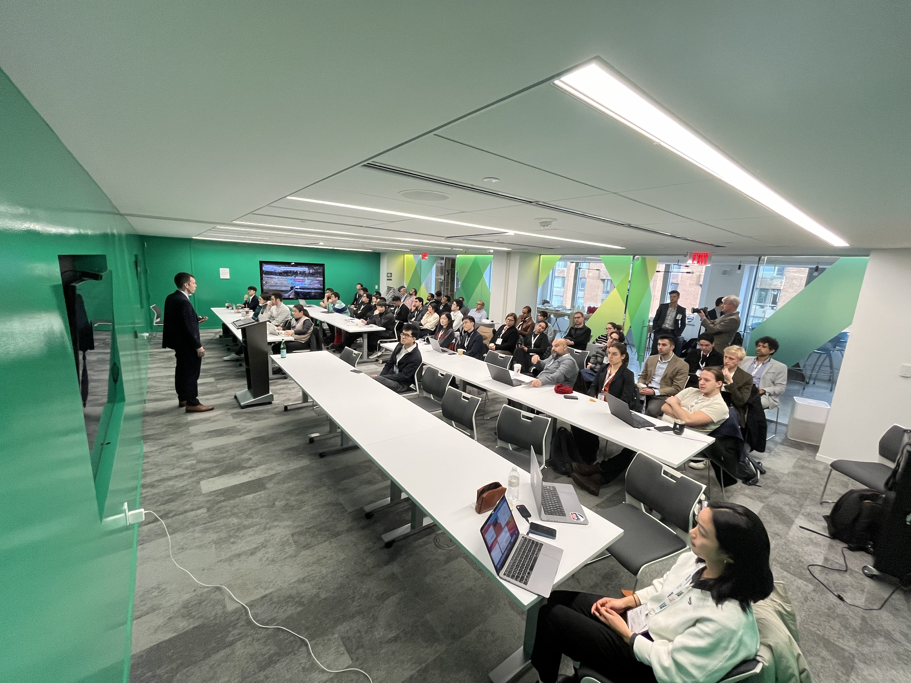
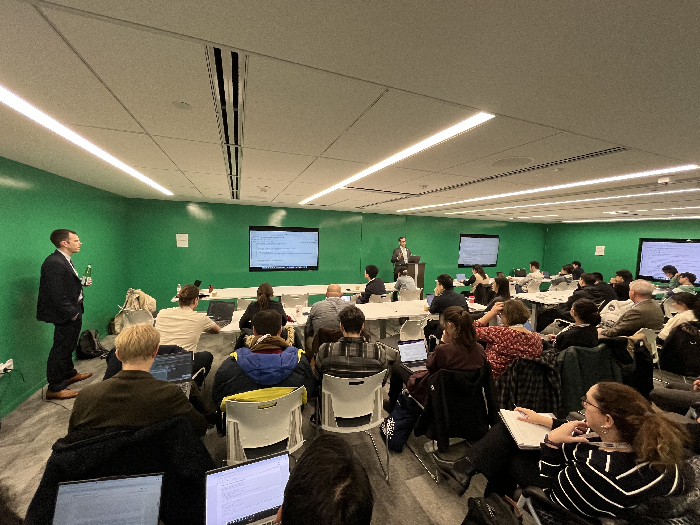

The I-24 MOTION team hosted a successful data tutorial and workshop during the Transportation Research Board 2024 Annual Meeting. This was an opportunity to hear about the project and the data it produces, work hands-on with the data with help from the development team, and discuss research ideas and use cases with the team. The workshop was held Wednesday, January 10, 2:00-5:30pm at Open Gov Hub meeting space, 1100 13th St NW STE 800, Washington, D.C., 20005.
Prof. Dan Work welcomed attendants.
Dr. Will Barbour went through tutorials.
The tutorial materials are based on the virtual trajectory idea from Junyi Ji:
- J. Ji, Y. Wang, D. Gloudemans, G. Zachár, W. Barbour, and D. B. Work, “I-24 motion virtual trajectories: Data and tools”, the 4th IEEE Forum for Innovative Sustainable Transportation Systems (FISTS), 2023.
Visit our Youtube channel for more information.
 I-24 MOTION: A new instrument for traffic science
I-24 MOTION: A new instrument for traffic science